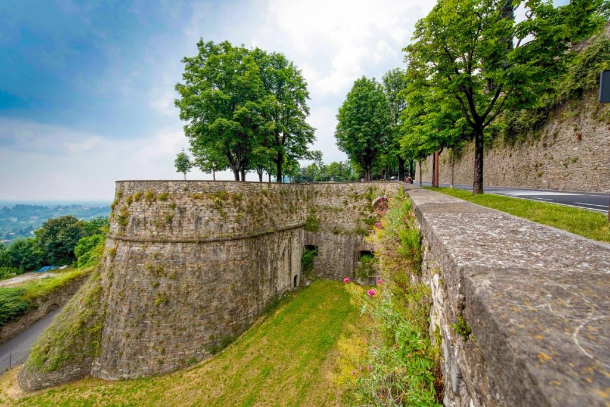
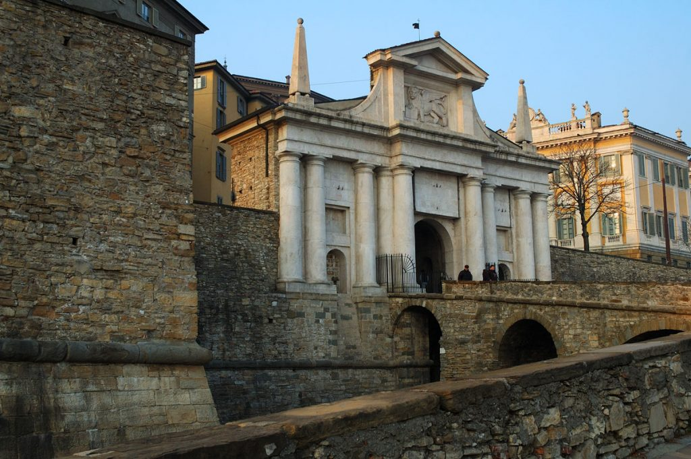
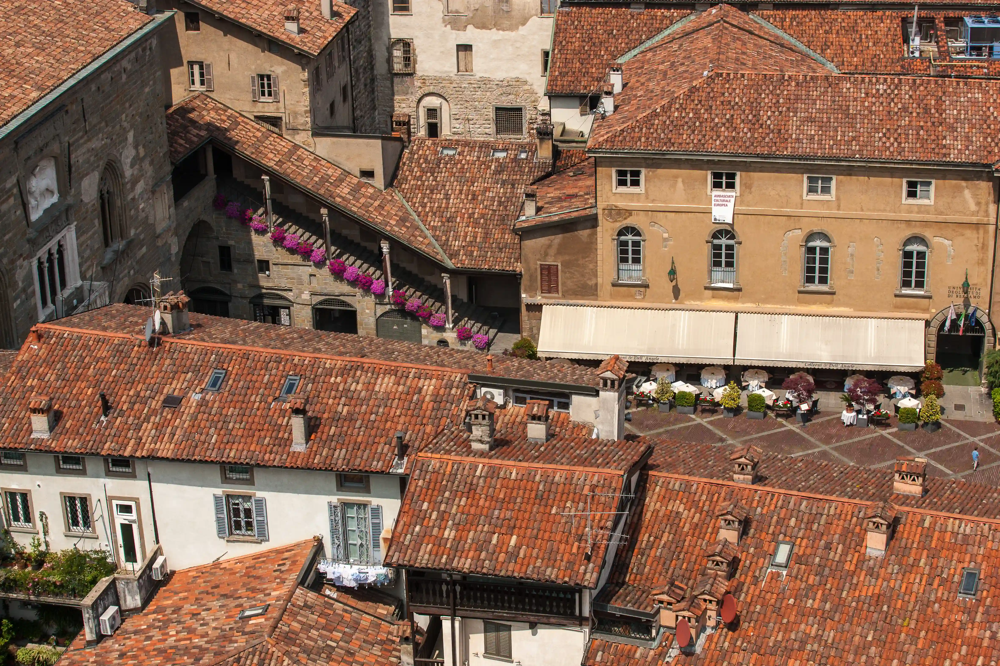
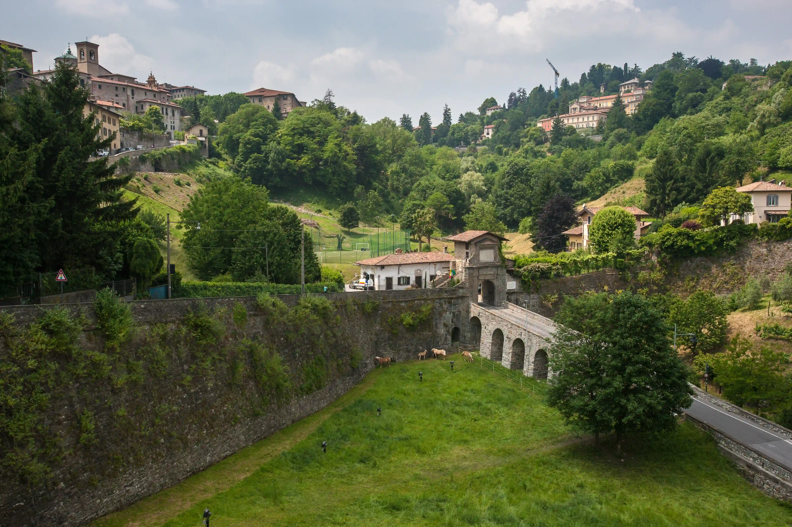

Componenti UNESCO in mappa
BERGAMO
La città fortificata di Bergamo fu una delle “podestarie maggiori” della Repubblica, in cui Venezia inviava i propri funzionari a governare e amministrare il territorio e garantire la giustizia. Estremo occidentale dell’intero sistema difensivo della Serenissima, nonché nucleo a protezione dello “Stato da Tera” dai tentativi di invasione da parte degli eserciti europei e imperiali, con le sue mura di proporzioni imponenti, alla cui costruzione hanno preso parte numerosi operai e architetti (veneziani e locali), Bergamo rappresenta un eccezionale esempio di città fortificata.
Unica fortificazione collinare della serie, lunga 6 Km e formata da: 4 porte, 14 baluardi, 2 piattaforme, 2 polveriere e 100 bocche da fuoco. Per la sua costruzione sono stati demoliti numerosi edifici preesistenti lungo il tracciato delle mura (abitazioni, laboratori, cascine, borghi, luoghi di culto, …) a cui talvolta si ispirano i nomi delle porte e degli altri elementi del sistema difensivo.
Il sito UNESCO comprende l’intero perimetro delle mura bastionate e degli spazi intorno (es. il fossato circostante), i due forti esterni di San Vigilio e San Domenico con le due vie di collegamento ad essi, e l’area urbana racchiusa all’interno del sistema fortificato inclusi una serie di edifici militari e di rappresentanza legati al ruolo politico della città in ottica di difesa territoriale.
Porta Sant'Agostino
Riedificata in muratura tra il 1574 e il 1588, a pianta quadrangolare, Porta Sant’Agostino fino ad allora era un varco di ingresso in terra e legno. Prende il nome dal non lontano monastero, scampato alla demolizione per la costruzione delle mura, oggi sede dell’Università di Bergamo. Oggi principale e più trafficato ingresso a Bergamo Alta, da Porta Sant’Agostino un tempo passavano Capitani e Podestà in arrivo da Venezia. La porta è divisa in 3 fornici a più piani e l’apertura centrale, più ampia, è caratterizzata da una volta a crociera poggiante su 4 pilastri. Sulla facciata realizzata in arenaria grigia è presente il bassorilievo del Leone Alato nel timpano centrale e sui lati sono ancora visibili i segni delle catene del ponte levatoio.
Porta San Giacomo
Costruita dal 1592, vi si accede da sud attraversando un viadotto in pietra costruito dal governatore veneziano Alvise Contarini nel 1780, in sostituzione dell’originale ponte levatoio in legno che bloccava l’accesso alla fortezza di notte oppure in caso di pericolo. Realizzata in marmo bianco rosato proveniente dalla cava di Zanobbio in Val Cavallina, risulta visibile a distanza. Maestosa e ricca di dettagli soprattutto esternamente, la porta non era solo una difesa per Bergamo, ma anche un manifesto della sua grandiosità, caratterizzata dal timpano centrale contenente il bassorilievo del Leone di San Marco, secolare simbolo della città di Venezia realizzato dallo scultore Piero Brolis, retto da due colonne.
Cannoniera di San Giovanni
Risalente al 1550, ai piedi del colle San Giovanni, la Cannoniera è una testimonianza della vita e della tecnica militare all’epoca della Repubblica Veneziana, composta da due grandi sale con i soffitti a volta. Formata in origine da 2 cannoniere su 2 livelli diversi, quella oggi visitabile è la cannoniera sotterranea, accessibile grazie a una scala metallica che collega il piano del baluardo con la casamatta (sotterraneo), posta a difesa del bastione, in cui un tempo i soldati venivano calati dall’alto. La cannoniera di San Giovanni fu riportata alla luce nel 2007 mediante la rimozione di 1880 metri cubi circa di terreno, mentre al suo interno, rimasto chiuso per secoli, l’ambiente richiama quello di una grotta naturale.
Piazza Vecchia e Palazzo del Podestà
Cuore della città, fulcro del potere politico di Bergamo, Piazza Vecchia è contraddistinta da una geometria perfetta tipica dell’architettura veneta e da un gran numero di edifici storici in armonia, compresa la Torre Civica con il “Campanone”, che ogni sera alle 10 suona 100 rintocchi, un tempo utilizzati per avvisare gli abitanti della chiusura delle porte.
Su Piazza Vecchia affaccia il Palazzo del Podestà: funzionario inviato dal senato di Venezia, uno dei due rettori insieme al Capitano, con funzioni civili e giudiziarie; di solito si trattava di un patrizio veneziano laureato presso lo Studio di Padova, che restava in carica 16 mesi.
Porta Sant'Alessandro
Completata nel 1565, fu una delle prime porte costruite nelle opere di difesa veneziane e prende il nome dalla antica Basilica di Sant’Alessandro, patrono di Bergamo, demolita nel 1561. Protetta dal Forte San Marco, si apre nella cortina occidentale del circuito bastionato a Colle Aperto e una volta terminato il suo utilizzo per scopi militari assunse la funzione di casello daziario, che mantenne fino al XIX secolo. La costruzione, realizzata in pietra grigia di Sarnico, pietra bianca di Zandobbio e arenaria gialla di Castagneta, all’epoca veneziana aveva la sola apertura di accesso centrale, ma nel tempo ha subito una serie di modifiche, fra cui le due nuove aperture laterali e il riposizionamento del bassorilievo del Leone Alato, sul prospetto esterno, donato dal Comune di Venezia a metà del ‘900.
Porta San Lorenzo
La più piccola tra le 4 porte, quella di San Lorenzo fu la prima ad essere costruita ed essendo destinata soprattutto alla popolazione e ai mercanti diretti in Svizzera, ha una facciata semplice e con pochi decori, risultando la meno scenografica. Per lo stesso motivo è l’unica a non avere il bassorilievo del leone Alato che venne posto dopo la seconda guerra mondiale ad opera di Piero Brolis sulle altre 3 porte. Nel 1615 la Porta San Lorenzo venne chiusa definitivamente, poiché si temeva non fosse sufficiente a difendere Bergamo dagli attacchi provenienti dalla Val Brembana e Imagna e fu riaperta a un livello superiore nel 1627 (ma la vecchia apertura risulta ancora visibile) per consentire l’accesso alla città dalle valli limitrofe e da Como.